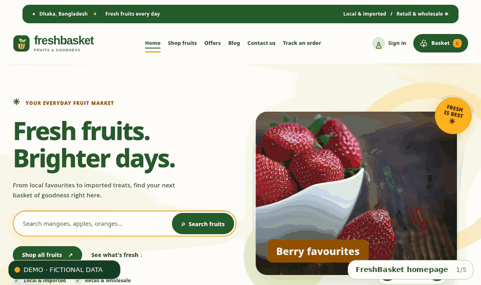
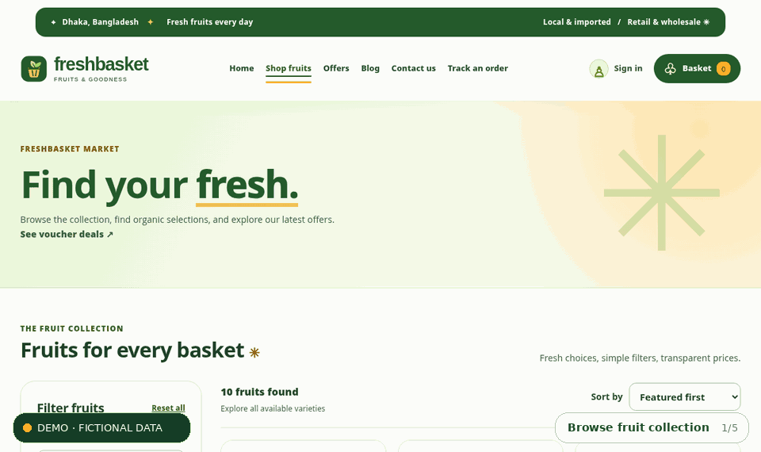
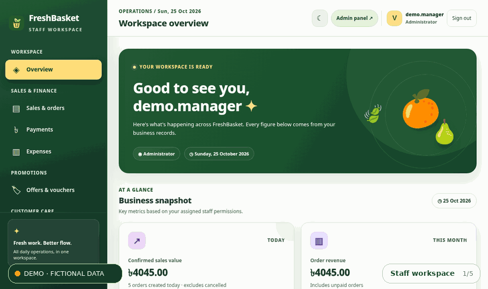

FreshBasket Fruits
A fruit shop and staff operations system that connects checkout, stock batches, promotions and fulfilment records.

Why I built it
An attractive shop front alone cannot manage a fruit business. A real order affects stock, payment tracking and delivery, while perishable inventory introduces freshness and spoilage concerns. This was an opportunity to work on the data integrity behind e-commerce rather than only the storefront.
Who I designed it for
Shop visitors and customer account holders; sales, inventory and accounts staff; managers; and superusers who administer staff and records. The provided previews use fictional products and figures.
The core user journey
How I approached the problem
I focused on connecting the important user tasks to working application and data flows.
Define roles and business rules
I separated customer activities from staff responsibilities and assigned permissions for sales, stock, accounts, management and admin access.
Model connected workflows
I organised products, suppliers, batches, purchases, orders, deliveries, promotions and stock movements in Django models and apps.
Protect checkout consistency
I implemented pricing/stock checks and transactional order creation with inventory allocation, while recording unit-price snapshots and payment status.
Test critical paths
I included automated tests for voucher rules, operations, account flows and management features, supported by setup documentation and workflow diagrams.
Why I chose this approach
Django made sense for a broader domain because it provides models, migrations, authentication and an admin interface. Modular apps divide the concerns without fragmenting the product, and database transactions are essential when checkout changes multiple related records. Role restrictions are enforced server-side rather than by hiding links.
The result, without inflated numbers
An implemented local Django application covering product search and filtering, session cart, checkout, guest order tracking, vouchers, staff dashboards, purchase/stock/spoilage workflows and manual payment records. It supports cash on delivery; it does not include a live card or mobile-wallet gateway or proven production load figures.
What I learned while building
This project pushed my thinking from “does the page work?” toward “are the business records still correct after the action?”. It gave me practice translating non-obvious rules—discount order, stock movement and role permissions—into code that can be checked and tested.
What I would improve next
Connect verified payment and courier services, strengthen customer identity verification, complete accessibility and security assessments, and benchmark deployment performance.
A closer look at the project
These previews help explain the interface and flow. They are labelled honestly where fictional data or simulated behaviour is involved.

